Cloud Concepts
Understanding Cloud Architecture Concepts
By Judson Flamm
- Global
- Virtual Machines
- Masterless Clustering
- Message Queues
- Data Caching
- NoSQL
- Configuration
- Deployment
- Monitoring / Analytics
Global
Global Reasoning:
- Performance for a Global Audience
- Geographic Fault Tolerance
Global ~ Multi-Datacenter
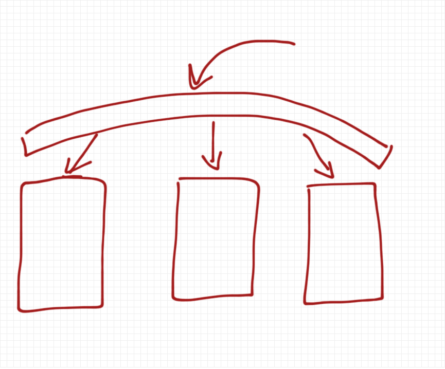
Global Starts with DNS
Datacenter Collaboration Strategies
- Independent vs. Logically Clustered
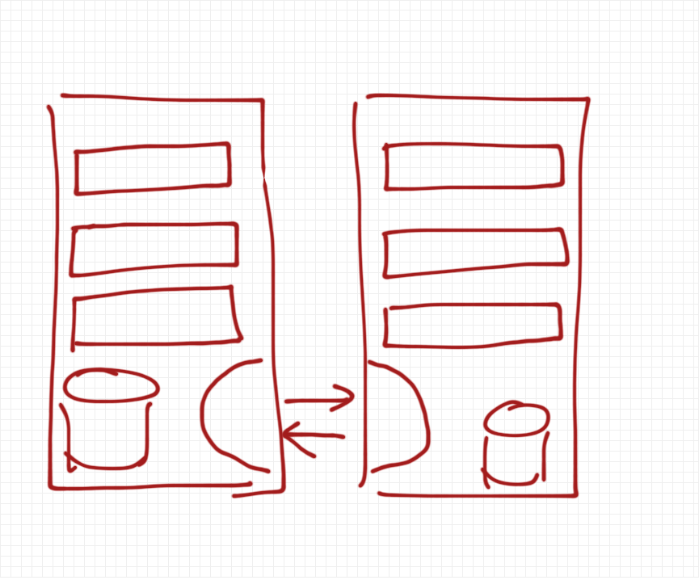
Independent Datacenters
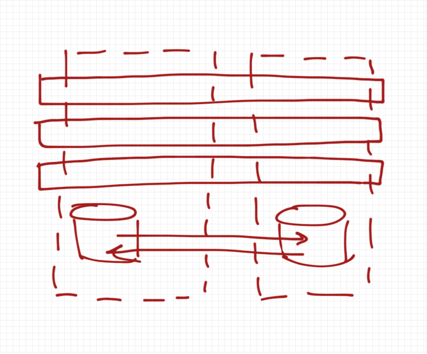
Logically Clustered Datacenters
Virtual Machines
Thinking Shift...
VM's are Disposable!
Focus on the VM Image...
- Temporary
- Multi-Node
- Lane Specific or Generic?
- Software Installed
- VM Identity
Fault Tolerance Within a Cluster
Expecting VM's to fail, leaves you in a good place when they doAuto Scalability
Spin up more VM's as load demandsQ:
Won't I loose my data when a VM fails or is disposed of?A:
Abstract the traditional data that resides on a server, away from the single serverMove everything specific off of the server!
VM Instance Data Options
- Local Instance Storage
- Persistent, SAN Storage
- Databases (diverse variety)
Masterless Clustering
Masterless Clustering
Each node is capable of all functionsEliminates Excess Coordination Servers
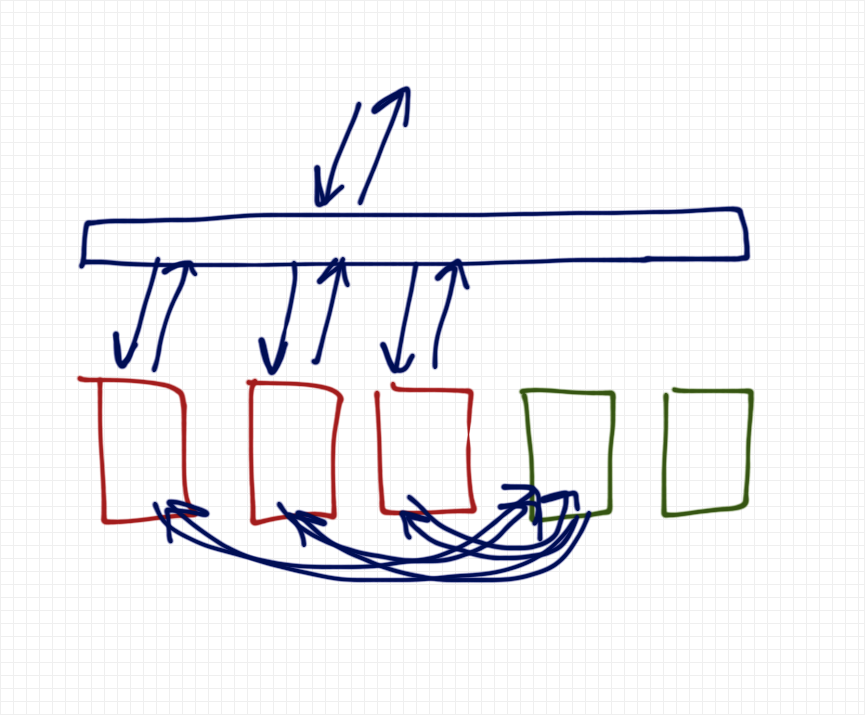
Mastered Clustering
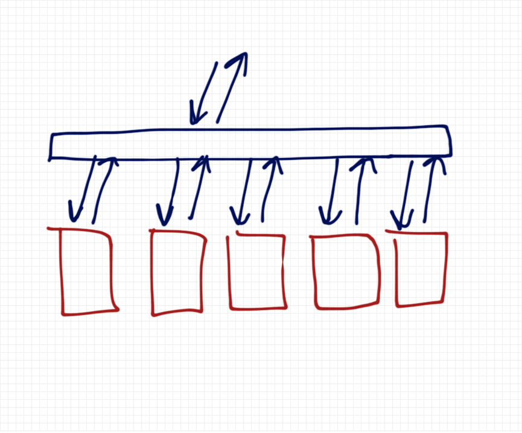
Masterless Clustering
Just One Problem:
No Task Master
Solutions:
- Lockable Datastore
- Message Queues
Message Queues
4 Systems Collaboration
and sometimes humans too
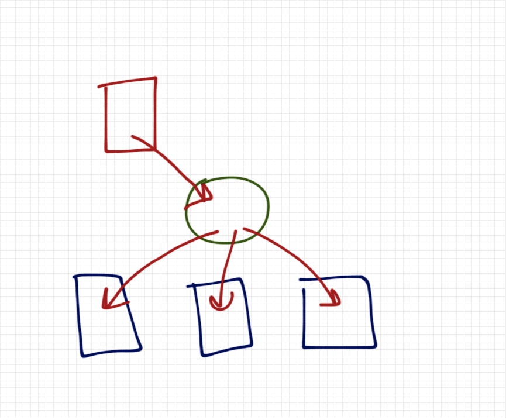
'Fan' Message Publication
Message Subscription Types
- Live Only (while available)
- Persistent / ALL (stored while unavailable)
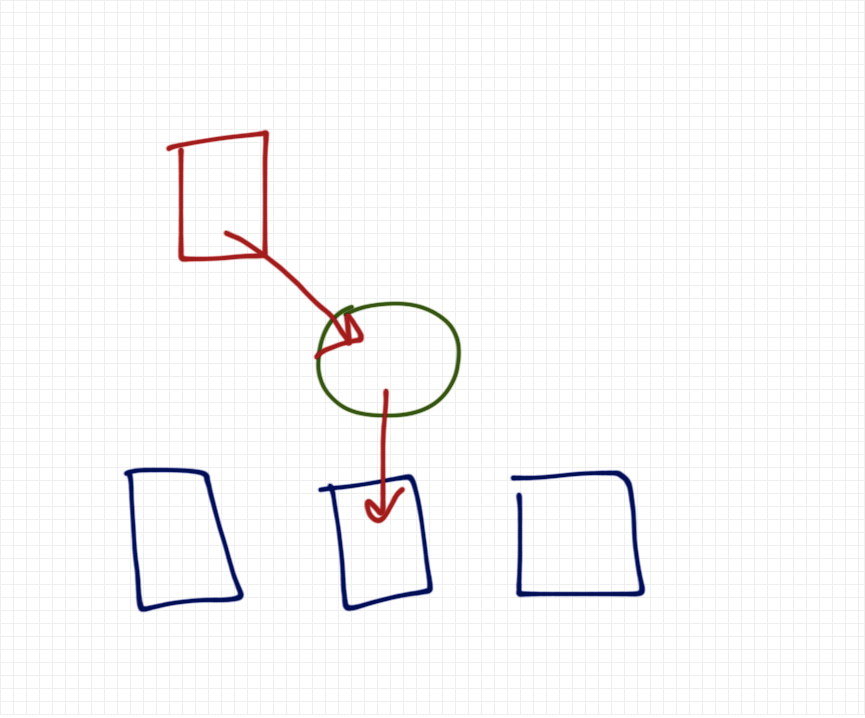
Sometimes Messages are Actually Jobs
Protocols
- Standard: AMQP
- Custom: WebSockets, REST
- Noteworthy: Redis
Data Caching
Dynamic Data Can Be Slow
Disk Based Datastores Are Slow Too
Caches are Aimed At These Problems
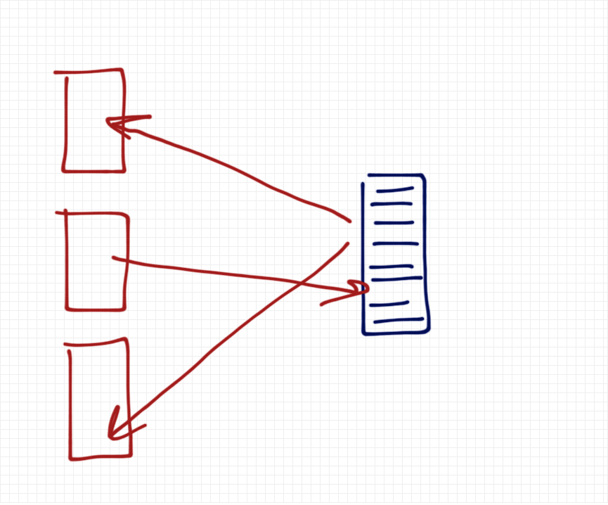
Central Cache
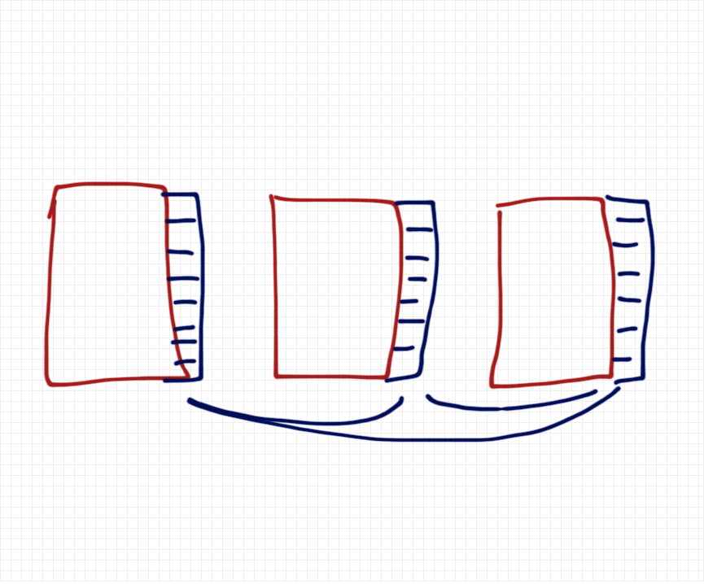
Distributed Cache
Many Technology Approaches
Usually In-Memory, Sometimes Persistent
- Memcached
- Redis
- NoSQL's in General...
NoSQL
NoSQL & VMs
Have fueled what we know as "The Cloud" todayKey Points:
Sharded / In-Memory Datasets & Indexes
Simple Key / Value Pairs of Data
No Joins to Slow Down the Data Fetches
SQL vs NoSQL
 Though B-Tree based SQL DBs have achieved some of these feats. Their throughput is dismal comparatively.
Though B-Tree based SQL DBs have achieved some of these feats. Their throughput is dismal comparatively.
source:blog.michaelckennedy.net
What You Trade
Transactions / Atomic WritesFor
Speed & Eventual ConsistencySharding & Replication
Master / Slave (Atomic Writes)
vs.
Dynamo Ring / Masterless (Eventualy Consistent)
Technology Popularity
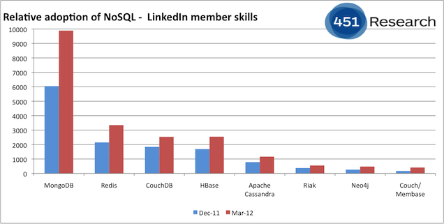source:blog.the451group.com
Configuration
Dynamic VM Configuration
Configure your VM Images to Obtain their configuration from a central sourceVM Attributes
- Identity
- Purpose
- Cluster
- Lane
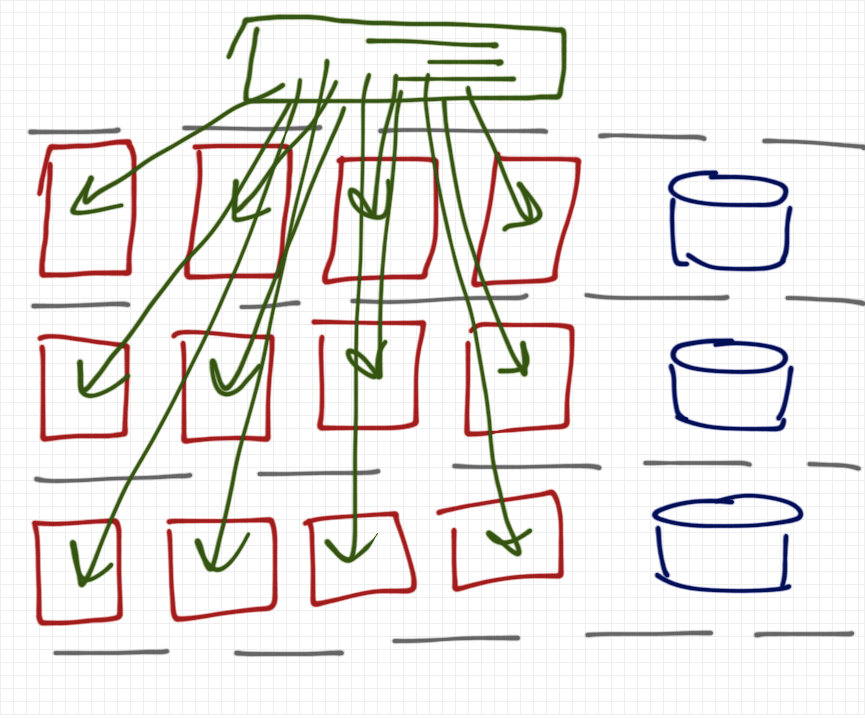
Dynamic Configuration
VM Setup
- Install and Setup Software
- Deploy Applications
- Join Cluster Groups
Deployment
Manual or Automated Deploys?
Regardless... neither should ever bring an app down↓
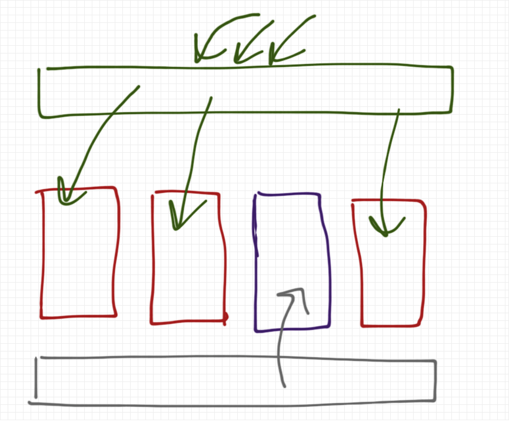
Incremental Deployment
Monitoring / Analytics
Server Logs are Crude
All In One Place
We need all of the data relevant to Operations, Errors, Performance, Feature Usage, Health Checks in one place...
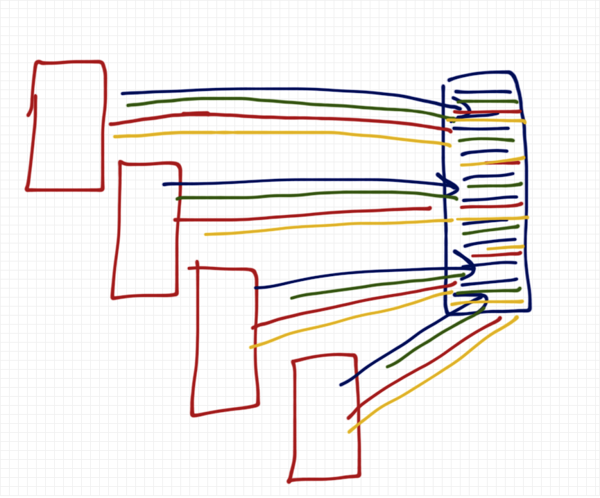
Unified Monitoring / Analytics Data
Who Should Use Monitoring / Analytics?
- Operations
- Auto Scaling
- Developers
- Product Owners
- Everyone